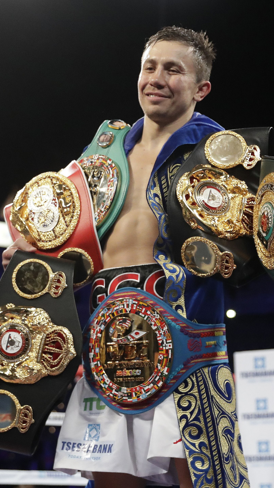

Această ipostază de triumf absolut nu este doar portretul unui sportiv premiat; ea este definiția vizuală a ceea ce înseamnă să atingi vârful în cel mai dur sport din lume. Imaginea unui campion unificat, înconjurat de trofeele sale, spune povestea universală a boxului prin câteva elemente fundamentale:
Zâmbetul din spatele sacrificiului: Contrar ferocității brute asociate adesea cu această disciplină, expresia unui luptător victorios este una de o calmă seninătate. În box, zâmbetul de după meci nu vine din ușurința luptei, ci din satisfacția că sutele de ore de sparring, alergările montane până la epuizare și regimul strict de nutriție au dat roade. Este liniștea deplină de după furtună.
Armura de campion: Centurile care acoperă corpul unui sportiv nu sunt doar accesorii de lux; în box, ele reprezintă moneda supremă. Fiecare curea din piele și fiecare emblemă aurie poartă în spate mize uriașe, decizii de fracțiune de secundă luate sub presiune maximă în ring și abilitatea de a rezista atunci când corpul îți cere cu disperare să renunți. Ele sunt cele care transformă un simplu luptător într-o legendă.
Mândria originilor și respectul: Roba tradițională purtată peste șortul modern de luptă amintește de o altă latură esențială: identitatea și disciplina din școala veche. Boxul este un sport profund înrădăcinat în respect, cultură și onoarea de a-ți reprezenta oamenii și valorile pe cea mai mare scenă a lumii.
Singurătatea din lumina reflectoarelor: Fundalul întunecat al arenei, punctat doar de reflectoarele puternice îndreptate spre ring, reflectă perfect realitatea crudă a acestui sport. Oricât de mare și dedicată ar fi echipa din colțul tău, în momentul în care se aude gongul, boxul devine cel mai singuratic sport din lume: ești doar tu, adversarul din față și testul suprem al propriului tău caracter.